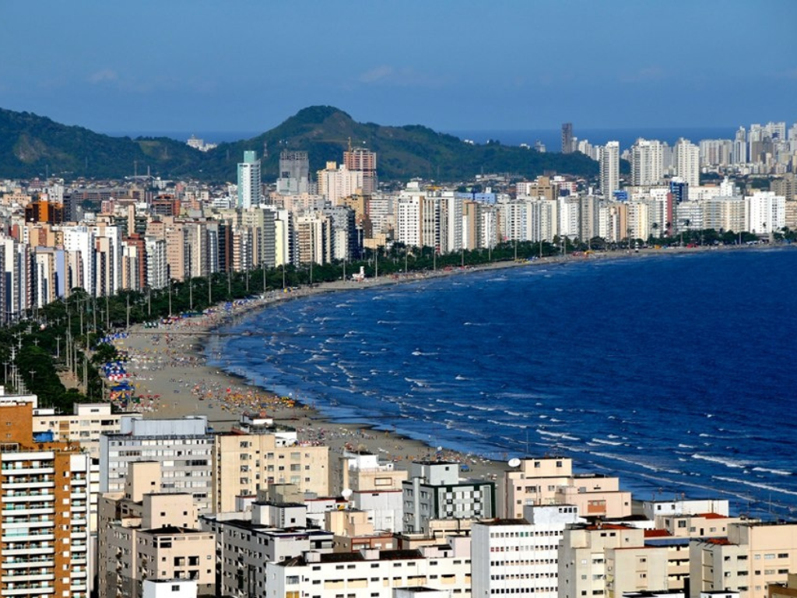

O estado do Espírito Santo (ES), localizado na região Sudeste do Brasil, tem Vitória como capital e é conhecido por seu litoral de 400 km e relevo serrano. Com cerca de 3,5 a 4 milhões de habitantes (chamados de capixabas), o estado destaca-se economicamente no extrativismo mineral, agricultura e logística, limitando-se com Bahia, Minas Gerais e Rio de Janeiro
